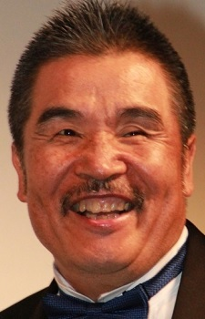

Katsuhisa is a Japanese actor and voice actor. He is affiliated with Kenyu Office. He is best known for his roles in One Piece as Gekko Moriah and Jimbei.
- Gender: Male
- Birthday: October 30, 1946

|  |
Katsuhisa is a Japanese actor and voice actor. He is affiliated with Kenyu Office. He is best known for his roles in One Piece as Gekko Moriah and Jimbei.
|
|---|
 |
Conrad | Romeo x Juliet |